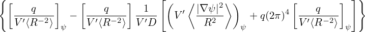

[In passing, we note that Ψ ≡ AϕR is the covariant toroidal component of A in cylindrical coordinates (R,ϕ,Z). The proof is as follows. Note that the covariant form of A should be expressed in terms of the contravariant basis vector (∇R, ∇ϕ, and ∇Z), i.e.,
|
| (505) |
where A2 is the covariant toroidal component of A. To obtain A2, we take scalar product of Eq. (505) with ∂r∕∂ϕ and use the orthogonality relation (80), which gives
|
| (506) |
In cylindrical coordinates (R,ϕ,Z), the location vector is written as
 | (507) |
where ,  , and
, and  are unit vectors along ∂r∕∂R, ∂r∕∂Z, and ∂r∕∂ϕ, respectively, i.e.
are unit vectors along ∂r∕∂R, ∂r∕∂Z, and ∂r∕∂ϕ, respectively, i.e.
 | (508) |
Using this, we obtain
 | (509) |
Use Eq. (509) in Eq. (506) giving
 | (510) |
with Aϕ deï¬ned by Aϕ = A ⋅ . Equation (510) indicates that Ψ = AϕR is the covariant toroidal
component of the vector potential.]
. Equation (510) indicates that Ψ = AϕR is the covariant toroidal
component of the vector potential.]